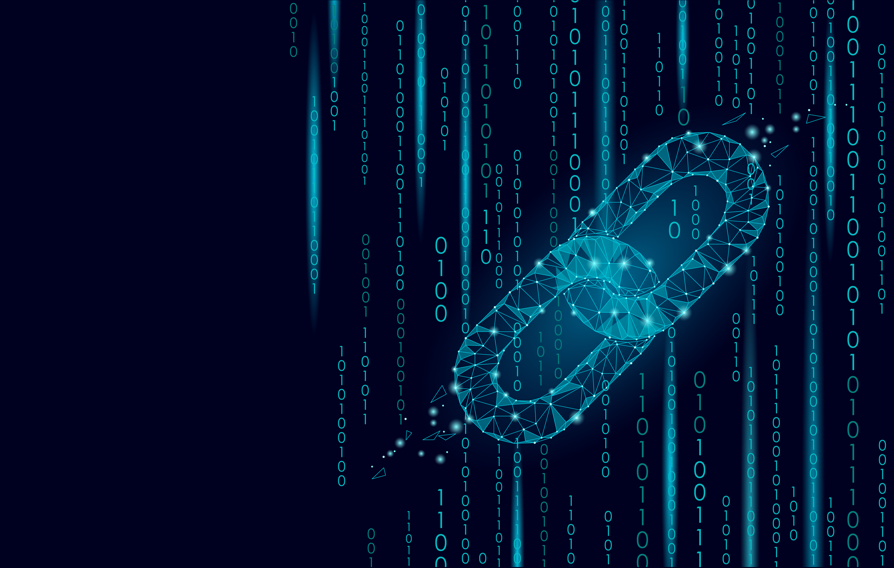
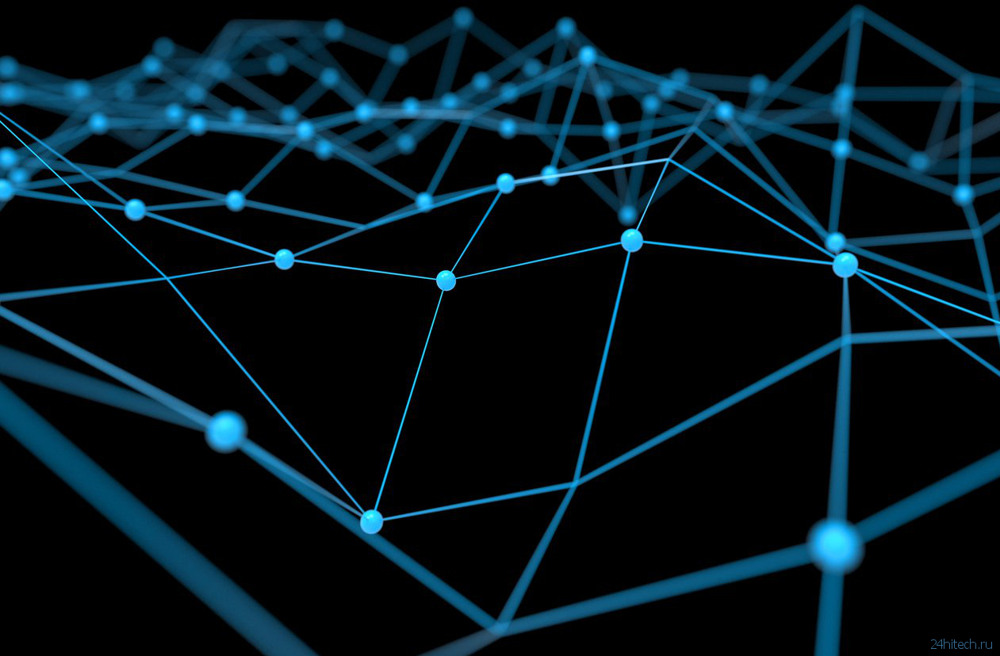
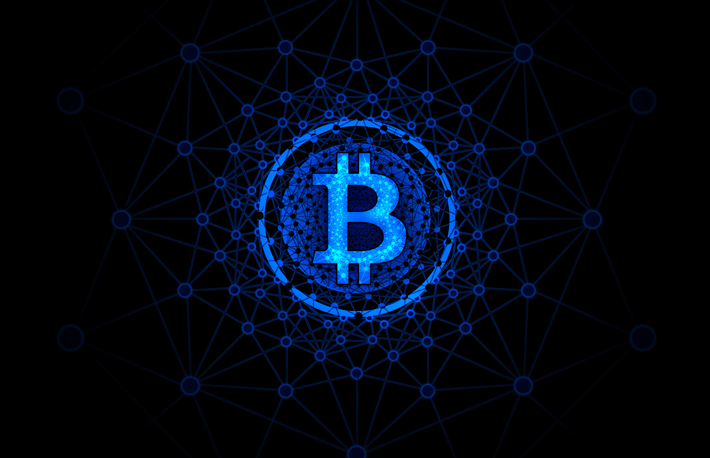
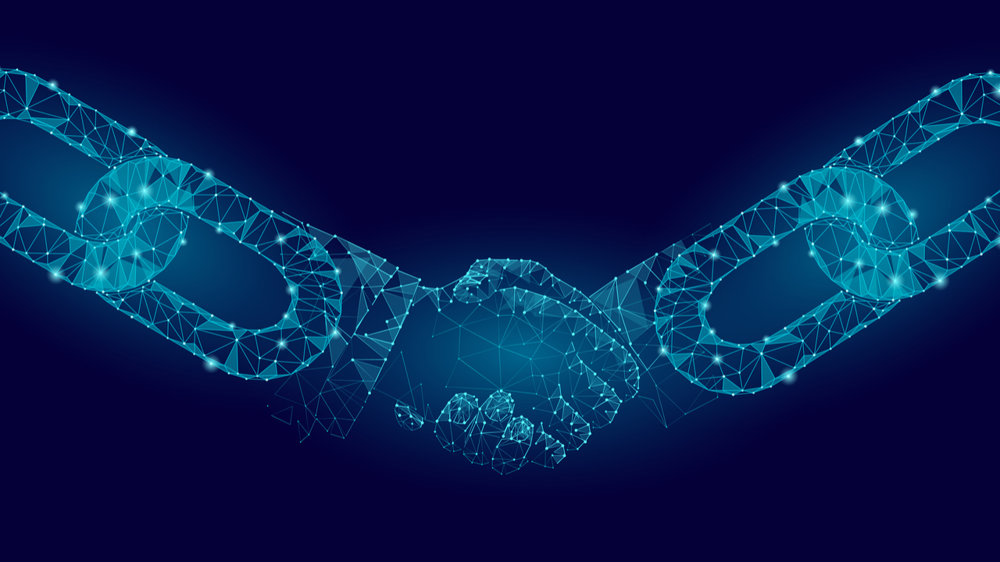
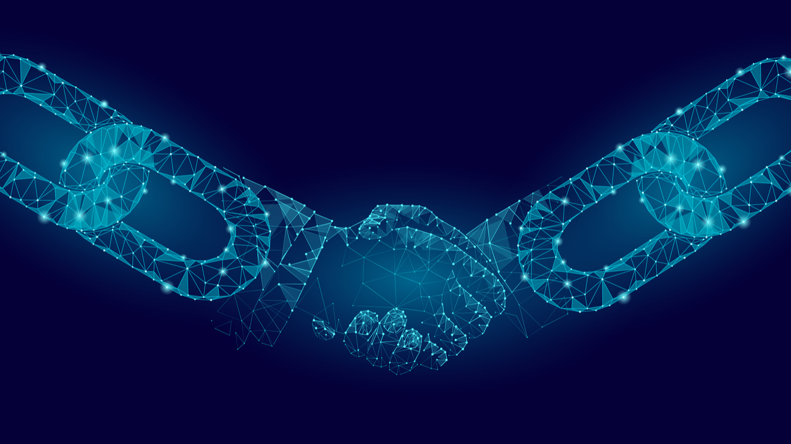
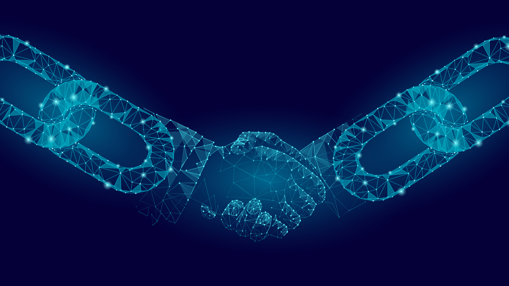
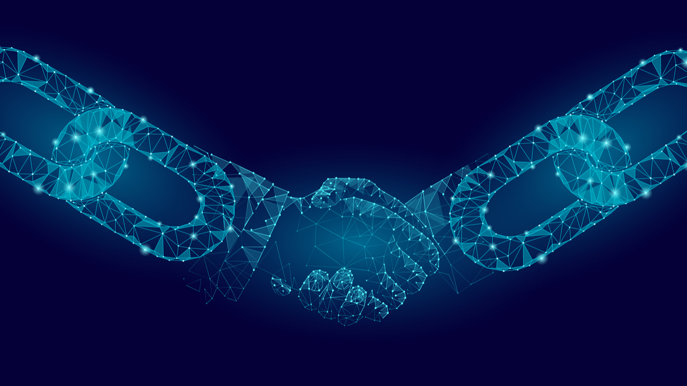

Blockchain
Blockchain



 



Blockchain is a distributed database that contains information about all transactions carried out by the participants of the system. The information is stored as a chain of blocks. A certain number of transactions are recorded in each of them. What is a distributed database? The word "distributed" means: there is no centralized organization that would check this process. According to the Bank of England, blockchain is "a technology that allows people who do not know each other to use the recording of events confidentially and jointly." It is impossible to secretly forge data inside this system, so it is recognized as corruption-resistant. The analogy with the blockchain is a necklace. Each bead is a "block" or a record of an action. This necklace — or "chain—- cannot be destroyed or destroyed. Thus, the blockchain is an unbreakable digital record of actions. The reliability of this system made it possible to use it to improve the efficiency of monetary transactions and the exchange of information among individuals, corporations and even the public sector.
The concept of "blockchain" has no national origin, it has a network "citizenship". The history of the term began in 2008, when an anonymous person or a group of people hiding under the pseudonym Satoshi Nakamoto published an article that became the manifesto of this innovative technology. The article describes its essential characteristics and the possibilities of creating a decentralized system of monetary settlements. In recent years, there have been many versions of who could have been the author of this manifesto. Some evidence in favor of his Russian-speaking origin is convincing. The first block was generated in 2009, and today more than 2 thousand types of crypto tools based on various modifications of the blockchain are circulating in the world.
Bitcoin is historically the first and most well-known application of blockchain technology. Transactions in it are transfers of funds between users' wallets. Each participant has access to information about any of the transactions that have ever occurred in the blockchain, starting with the first transfer in 2009. As the first application of the blockchain, bitcoin has contributed to the global growth of the popularity of this technology and familiarized the world with its advantages. But subsequently, in the process of development on the basis of the blockchain and its modifications, other cryptocurrencies appeared, as well as other forms of effective use of this technology that are not related to crypto tools.
At least two types of payment means can be distinguished. First of all, these are traditional non-state cryptocurrencies, such as ether and bitcoin, which have a multibillion-dollar capitalization (if measured in "traditional" fiat dollars). The second type — cryptocurrencies of central banks — are often attempts by fiat state issuers to pour "new wine into old furs": to present a new form of seigniorage earning, i.e. the issue of state currency, as something supermodel and progressive. Only a few projects for the issuance of CB securities today provide for a truly decentralized nature of their issue.
There are problems of a technological nature. First of all, scalability: today, many popular distributed ledger systems cannot process a large number of transactions, which leads to a slowdown in the turnover and processing of transactions in them. Another disadvantage is the lack of confidentiality due to the quasi-anonymity of the blockchain. Some types of blockchain are potentially vulnerable to hacker attacks, as well as to the so—called "51% attacks" - when, in full compliance with the rules of the system, a coalition of users with large computer capacities can change records in a particular blockchain. This process is similar to how a majority shareholder in a joint-stock company takes control. In addition, regulatory and legal risks, as well as sometimes overwhelming resource and energy intensity, remain specific risks of the cryptocurrency sector of the blockchain industry.
The largest market players organized themselves into consortia in 2015-17. They have already implemented hundreds of experiments and tests with blockchains of various types. The possession of this technology remains a pass to the elite club, its diffusion into the "masses" of businessmen and consumers will not be instantaneous. The hype (and the heyday of many fraudulent projects using crypto assets) that we observed in 2017-2018 is unlikely to be repeated, but there will be more and more successful blockchain implementations in various segments of the commercial and public sector. Convergence of IO/STO with traditional IPOs will lead to transformation and partial removal of unnecessary barriers in the stock market. The polarization of the attitude of various jurisdictions to technology and the phenomenon of blockchain-friendly states — and hence regulatory arbitration — will last for several more years, replaced by a global awareness of the advantages of this technology and its sighted adoption by legislators.
